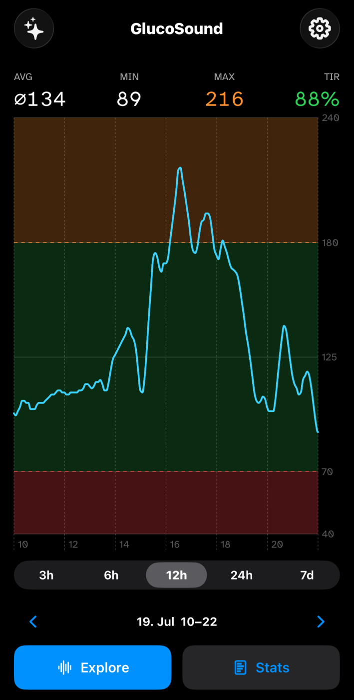
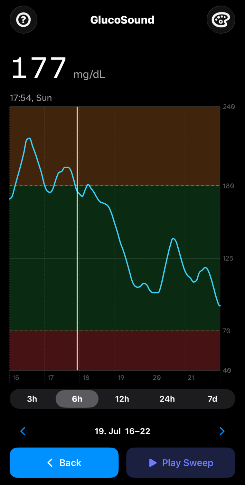
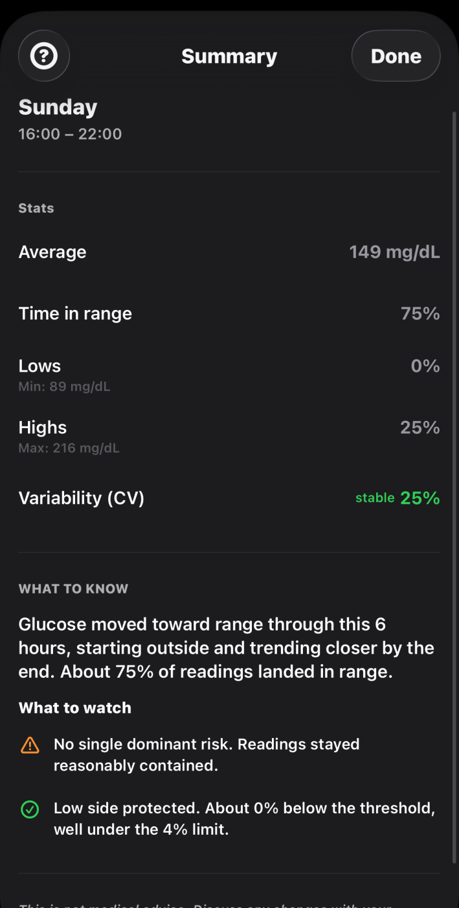

mon spelly
I build auditory blood glucose graphs for blind people with diabetes.
Ich arbeite an akustischen Blutzuckergraphen für blinde Diabetiker:innen.
The project
Das Projekt
GlucoSound: hear your blood sugar.
GlucoSound: den Blutzucker hören.
CGM sensors report blood glucose every five minutes. A single reading already matters, but the trend adds something a single value can't: seeing glucose patterns over time is how people and clinicians see the effect of meals and behavior, and it forms the basis for individually optimized treatment.[1] That kind of pattern view is also linked to less time in hypoglycemia and better long-term control.[2] In the manufacturers' apps, that trend chart is essentially invisible to screen readers. The accessibility APIs that could fix it have existed since 2021. An estimated one in three to four people with diabetes has some degree of diabetic retinopathy[1], exactly the population CGM is built for.
GlucoSound is a free iOS app that closes this gap with interactive sonification. A finger on the chart produces a continuous tone whose pitch follows the glucose value. Out-of-range values are unmistakably marked in the sound itself. On release, the app speaks value and time. Alongside the sonified view: a fully labeled VoiceOver bar chart and a rule-based text summary.
CGM-Sensoren liefern alle fünf Minuten einen Blutzuckerwert. Auch der einzelne Wert ist schon wertvoll, aber der Trend liefert einen weiteren Wert: Wer sich Verläufe über die Zeit ansieht, erkennt, wie Mahlzeiten und Verhalten den Blutzucker beeinflussen, und das bildet die Grundlage für eine individuell optimierte Behandlung.[1] Dieser Blick auf Muster ist außerdem mit weniger Zeit in Unterzuckerung und besserer langfristiger Einstellung verbunden.[2] Genau diese Trendkurve ist in den Apps der Hersteller für Screenreader praktisch unsichtbar. Die Schnittstellen, mit denen sich das beheben ließe, gibt es seit 2021. Schätzungsweise jede:r dritte bis vierte Mensch mit Diabetes hat einen gewissen Grad an diabetischer Retinopathie[1], also genau in der Gruppe, für die CGM gemacht ist.
GlucoSound ist eine kostenlose iOS-App, die diese Lücke mit interaktiver Sonifikation schließt. Ein Finger auf der Kurve erzeugt einen durchgehenden Ton, dessen Tonhöhe dem Blutzucker folgt. Werte außerhalb des Zielbereichs sind im Klang selbst unmissverständlich markiert. Beim Loslassen spricht die App Wert und Uhrzeit. Dazu kommen ein vollständig beschriftetes Balkendiagramm für VoiceOver und eine regelbasierte Textzusammenfassung.
- Platform
- Plattform
- iPhone · iOS 17+
- Data source
- Datenquelle
- Apple Health · Dexcom Share
- Heinemann, L., Drossel, D., Freckmann, G. & Kulzer, B. Usability of Medical Devices for Patients With Diabetes Who Are Visually Impaired or Blind. J Diabetes Sci Technol, 2016.
- Wright, E.E. & Kerr, M.S.D. Utilizing the New Glucometrics: A Practical Guide to Ambulatory Glucose Profile Interpretation. Clin Diabetes Endocrinol, 2022; Cleveland Clinic Journal of Medicine, "Using continuous glucose monitoring data in daily clinical practice," 2024.
- Heinemann, L., Drossel, D., Freckmann, G. & Kulzer, B. Usability of Medical Devices for Patients With Diabetes Who Are Visually Impaired or Blind. J Diabetes Sci Technol, 2016.
- Wright, E.E. & Kerr, M.S.D. Utilizing the New Glucometrics: A Practical Guide to Ambulatory Glucose Profile Interpretation. Clin Diabetes Endocrinol, 2022; Cleveland Clinic Journal of Medicine, „Using continuous glucose monitoring data in daily clinical practice", 2024.



Concept demo
Konzept-Demo
This is what blood sugar sounds like.
So klingt Blutzucker.
A browser recreation of the app's Soft Chime instrument, running on six hours of example data. It is a concept demo: close to the real engine, not identical to it. Drag across the curve, or click it once and scrub with the arrow keys. When you let go, value and time are spoken, as in the app.
Eine Browser-Nachbildung des Soft-Chime-Instruments aus der App, mit sechs Stunden Beispieldaten. Es ist eine Konzept-Demo: nah an der echten Engine, aber nicht identisch. Zieh über die Kurve, oder klick sie einmal an und taste dich mit den Pfeiltasten durch. Beim Loslassen werden Wert und Uhrzeit gesprochen, wie in der App.
Arrow keys step 5 minutes, Page Up/Down one hour, Home/End to the edges. Pfeiltasten: 5 Minuten. Bild auf/ab: eine Stunde. Pos1/Ende: an die Ränder.
No sound? Check the ringer switch on the side of your iPhone is not set to silent. Kein Ton? Prüf den seitlichen Schalter am iPhone, er darf nicht auf lautlos stehen.
- Linear pitch mapping, 130–784 Hz across 40–300 mg/dL. A pure bijection: the same value always sounds the same.
- Built to sound pleasant, not just informative. The goal is a tone people want to check regularly, including in public. A pure sine wave, what Apple's Audio Graph uses, can sound harsh and fatiguing with repeated listening.
- Categorical zone cues: tremolo below range, vibrato above, at full depth from the first sample.
- Hour boundaries as click transients, temporal landmarks while scrubbing.
- Base pitch and pitch span are fully adjustable in the app itself. Diabetes is also disproportionately associated with hearing impairment, and a fixed mapping would leave some listeners with less of the range to hear.
- Lineares Pitch-Mapping, 130 bis 784 Hz über 40 bis 300 mg/dL. Eine reine Bijektion: derselbe Wert klingt immer gleich.
- Auf angenehmen Klang ausgelegt, nicht nur auf Information. Ziel ist ein Ton, den man sich gerne regelmäßig anhört, auch in der Öffentlichkeit. Ein reiner Sinuston, wie ihn Apples Audio Graph verwendet, kann bei wiederholtem Hören schnell schrill und ermüdend wirken.
- Kategoriale Zonen-Cues: Tremolo unterhalb, Vibrato oberhalb des Zielbereichs, ab dem ersten Wert in voller Tiefe.
- Kurze Klicks an den Stundengrenzen, zeitliche Orientierungspunkte beim Abtasten.
- Grundtonhöhe und Tonhöhenspanne sind in der App frei einstellbar. Diabetes geht überdurchschnittlich häufig mit Hörbeeinträchtigungen einher, und ein festes Mapping würde manchen Hörer:innen einen Teil des Bereichs vorenthalten.
Who I am
Wer ich bin
Nine years of run-up.
Neun Jahre Anlauf.
I'm Mon Spelly (they/them), a designer and developer from Bremen. In 2017 my blind roommate got his first Dexcom sensor. VoiceOver's complete description of his six-hour glucose chart: "Twin graph." Two words. I prototyped a sonification back then, but never got past the concept.
Early 2026, that same friend got the new Dexcom G7. Same chart, still inaccessible. This time, a few weeks of focused work were enough for a working app. I've been developing GlucoSound since, and I'm here to connect it with the people who understand this problem best.
Ich bin Mon Spelly (they/them), Designer:in und Entwickler:in aus Bremen. 2017 bekam mein blinder Mitbewohner seinen ersten Dexcom-Sensor. VoiceOvers vollständige Beschreibung seiner Sechs-Stunden-Kurve: „Twin graph." Zwei Wörter. Ich habe damals an einer Sonifikation gebastelt, bin aber nicht über das Konzept hinausgekommen.
Anfang 2026 bekam derselbe Freund den neuen Dexcom G7. Dieselbe Kurve, immer noch unzugänglich. Diesmal haben ein paar Wochen konzentrierter Arbeit für eine funktionierende App gereicht. Seitdem entwickle ich GlucoSound weiter, und ich bin hier, um mit den Menschen ins Gespräch zu kommen, die dieses Problem am besten verstehen.
Looking for
Gesucht
How you can help.
Wobei du helfen kannst.
-
Academic mentoring and study support
I want to evaluate the sonification properly: study design, methodology, perhaps a publication. If you supervise students, review papers, or have run a study with blind participants yourself, your experience would help me enormously.
-
Reaching blind CGM users, and staying in touch with them
I'm in contact with first organisations and testers, but the need is far from covered. And beyond first contact, keeping an accessible feedback channel open with blind users is a challenge of its own. Introductions and practical advice are equally welcome.
-
Experience with medical device regulation
GlucoSound handles health data, and I want to release it responsibly. Even after a fair amount of research, I still can't say for sure whether this counts as an accessibility tool or a medical device. If you know your way around MDR or that distinction in general: I have questions.
-
Akademisches Mentoring und Studienbegleitung
Ich möchte die Sonifikation sauber evaluieren: Studiendesign, Methodik, vielleicht eine Publikation. Wer Studierende betreut, Paper reviewt oder selbst schon eine Studie mit blinden Teilnehmenden durchgeführt hat, kann mir enorm helfen.
-
Blinde CGM-Nutzer:innen erreichen und mit ihnen in Kontakt bleiben
Mit ersten Organisationen und Tester:innen bin ich im Gespräch, aber der Bedarf ist längst nicht gedeckt. Und über den Erstkontakt hinaus ist ein barrierefreier Feedback-Kanal eine eigene Herausforderung. Ich freue mich über Kontakte genauso wie über praktischen Rat.
-
Erfahrung mit Medizinprodukte-Regulierung
GlucoSound arbeitet mit Gesundheitsdaten, und ich will es verantwortungsvoll veröffentlichen. Ob das ein Hilfsmittel oder ein Medizinprodukt ist, kann ich auch nach ausführlicher Recherche noch nicht sicher sagen. Wer sich mit MDR oder dieser Abgrenzung generell auskennt: Ich hätte Fragen.
Contact
Kontakt